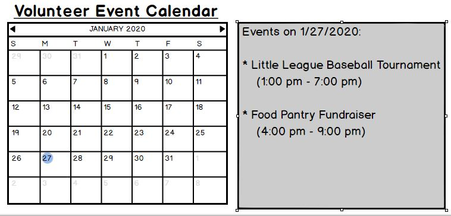

In lecture, we discussed the example of developing a platform for volunteers and administrators to perform various tasks, relating to the events needing volunteers (i.e., adding a calendar to look at upcoming events and a list of volunteers volunteering at a certain event, along with their roles. One of the most important features of this software would be the calendar. Two stories (or testable, deliverable parts of a feature) of the calendar feature are changing how the calendar is formatted (from grid to list, and vise versa) and linking the page of the event to the calendar (so that when the name of the event is clicked on, it goes to the page of the event).
The first schematic of the calendar is shown below:
 Home